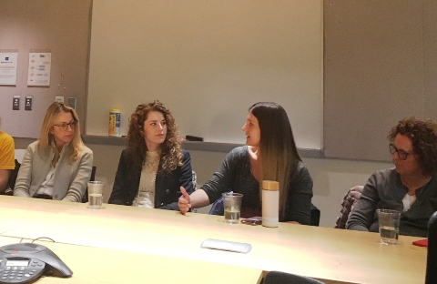
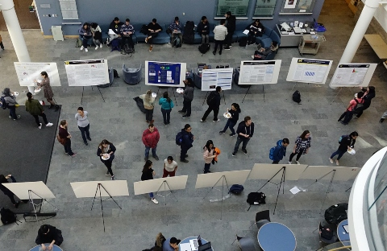
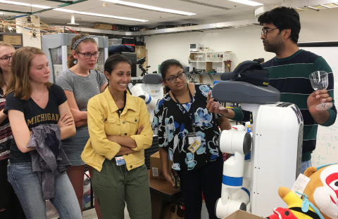
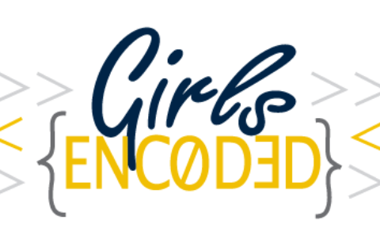
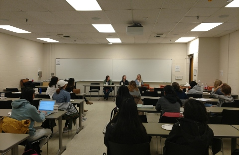
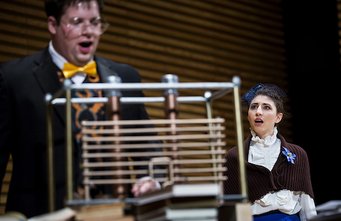
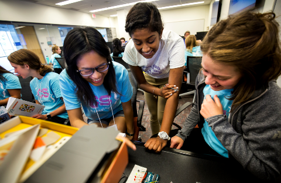
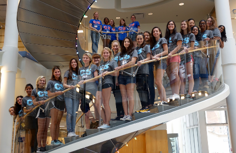
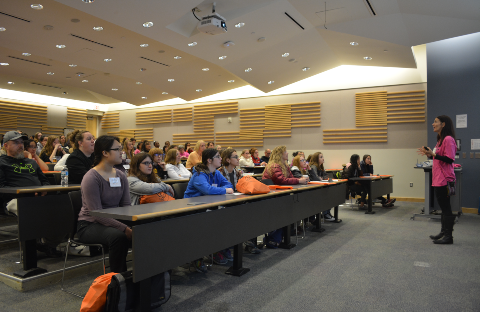

Laura (Wendlandt) Burdick
My vision is to see computer science become a more diverse field where women and other underrepresented minorities have the tools and opportunities needed to succeed. Towards that end, I am interested in exploring creative solutions to both recruit and retain women in technology.
I am co-director of Girls Encoded, an initiative at the University of Michigan to improve the recruitment and retention of women and underrepresented minorities in computer science. Through Girls Encoded, we introduced a new class in Fall 2018, EECS 198: Discover CS. This class is particularly designed to introduce incoming freshmen women to the excitement of programming for the first time.
In addition to Girls Encoded, I am involved in CS KickStart, a week-long summer program designed to help women explore computer science. I was one of the original organizers who brought this program to U-M in August 2016. In addition, I handled industrial relations in 2016 and continued to serve as an advisor in 2017. In 2018, I was the primary Python tutorial instructor.
In the News

Panel of women in computing offers career insights December 6, 2019

Encouraging careers in research May 14, 2019

Kickstarting the first year for women in computer scienceSeptember 11, 2018

Google award to introduce women to computer science researchAugust 23, 2018



CS KickStart Wants First-Year Women to Succeed in Computer ScienceSeptember 5, 2017

CS KickStart Gives Incoming Freshmen an Introduction to Computer ScienceSeptember 12, 2016

Girls Encoded Motivates Students to Study CSApril 26, 2016